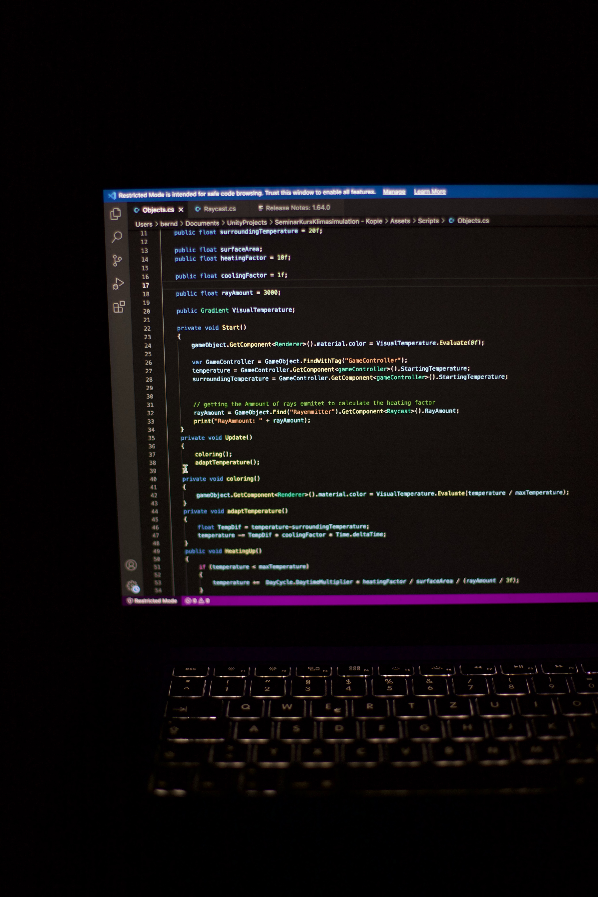

- HTML
- CSS
- JabaScript
- 영희
- 철수
- 환진
HTML
본사는안산에서 20 여년을 고객 님들과 함께 해왔습니다">
이삿짐 일은 물론이고 가구 인테리어자재 양중 유리샤시 양중작업 태양광자재 양중 작업등을
전문으로 하고 있습니다
의미합니다.
HTML 이란 무엇인가?
즉, 제목을 뜻하기 때문에
그만큼 강조가 된 것처럼 보실 수 있습니다.
이번에는 태그 ~ 태그를
비교해 보도록 하겠습니다

그럼 위와 같이 태그가 가장 크고,
태그로 갈수록 점점 더
글자 크기가 작아지는 걸
주말휴일 에는 스트레스도 풀고 일상여유로움을
느끼게 가까운 바닷가 카페도 가고
반팔만 입고 다녀도 될듯하네요,
[출처] 안산수원용인“해피한사다리차”자재양중 셀프이사
철거폐기물“작업장비 입니다,|작성자 경기남부해피사다리차